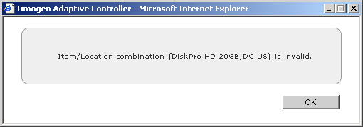
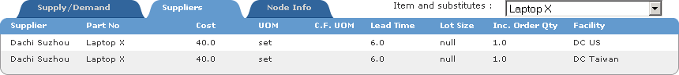
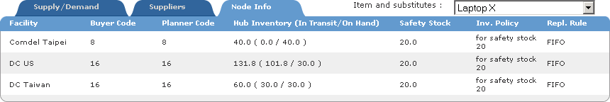

Viewing Inventory Item Where Used Supply/Demand Information
To view
inventory Item
Where Used
Supply/
Demand
information
1 In the Function drop-down list, select Business User.
2 Click the Visibility tab.
3 Click Supply Networks.
4 Select Where Used.
5 From the Item drop-down list, select an Item.
Note: To view more records in the Items list, click  , then select the Item.
, then select the Item.
6 From the Location drop-down list, select a single Location (or All if you want to use
all locations).
Note: To view more records in the Locations list, click , then select a Location.
7 Optionally enter an Effective Date (in MM/DD/YY format) or click  and select a
date that will be the date of the first time bucket in the Supply/Demand view.
and select a
date that will be the date of the first time bucket in the Supply/Demand view.
8 Click Submit. The Tree and Display panes appear.
Note: If you select an Item/Location pair that does not exist (the selected Item is
not at the selected Location), you'll see an error message:

Select a different Item or Location, then click Search again.
In the Tree and Display panes, you can view comprehensive information about inventory at the Impact Node(s):
· If the box next to an Inventory Item in the tree view has a + next to it ( ), it means
that the Item is a component of another produced Items. Click the + to expand the
tree and view the produced Items.
), it means
that the Item is a component of another produced Items. Click the + to expand the
tree and view the produced Items.
· Click to view inventory information for that Item in the Display pane.
· If an item has a substitute, you can select that substitute to view its inventory infor-
mation in the Display pane.
· Click  in the Display pane to change the number of time buckets displayed or the
date for the first time bucket.
in the Display pane to change the number of time buckets displayed or the
date for the first time bucket.
in the Display pane to change the number of time buckets displayed or the
date for the first time bucket.
· Hover the mouse pointer over to view information about when information about
the Item was last updated from the ERP system.
· Click  next to Inflow in the Supply/Demand tab to view Purchase Order (PO),
Manufacturing Order (MO) and Transfer In information about the Item and click
next to each of those to view Plan, Actual, and Resolution numbers.
next to Inflow in the Supply/Demand tab to view Purchase Order (PO),
Manufacturing Order (MO) and Transfer In information about the Item and click
next to each of those to view Plan, Actual, and Resolution numbers.
next to Inflow in the Supply/Demand tab to view Purchase Order (PO),
Manufacturing Order (MO) and Transfer In information about the Item and click
next to each of those to view Plan, Actual, and Resolution numbers.
Click any number link to view details about that transaction.
· Click next to Outflow in the Supply/Demand tab to view Sales Demand,
Dependent Demand, and Transfer Out information about the Item and click next
to each of those to view Plan, Actual, and Resolution numbers.
next to Outflow in the Supply/Demand tab to view Sales Demand,
Dependent Demand, and Transfer Out information about the Item and click next
to each of those to view Plan, Actual, and Resolution numbers.
Click any number link to view details about that transaction.
· Click the Suppliers tab to view detailed information about suppliers for the Item.

· Click the Node Info to view detailed information about Locations.
